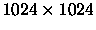
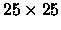
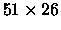

| WIMP |
A window manager takes care of the details of creating, displaying, moving, and resizing a collection of windows in a graphical user interface. It also handles input events (like mouse clicks) related to these window management tasks. Your project is to write a WIndow Manager Program (WIMP).
The WIMP controls a screen of size

(measured in pixels),
with the upper left-hand
pixel at (0,0). The x-coordinates range from 0 at the left edge of the
screen to 1023 at the right
edge, and the y-coordinates range from 0 at the top of the screen to 1023
at the bottom. All
coordinates are integers. The user can create and manipulate rectangular
windows by moving
the mouse and clicking the mouse button. A window has 4 distinct areas:
| Area | Location and Size |
| Close box | upper left hand corner of the window (  pixels) |
| Zoom box | upper right hand corner of the window ( pixels) |
| Motion bar | fills the top 25 pixels of the window, excluding zoom and close boxes |
| Data area | remainder of the window |
A window will always be at least  so that all four areas are nonempty. Each window is assigned a unique integer identifier, starting at 0 (the first window created has id 0, the second one created has id 1, and so on). Identifiers are not reused.
The WIMP accepts the following events:
| Event | Meaning |
| DN x y | user pressed mouse button at location (x,y) |
| UP x y | user released mouse button at location (x,y) |
| AT x y | user moved mouse to location (x,y) |
| CR l t r b | create new window with positions left, top, right, and bottom |
| RE | redraw all windows from back to front |
| ZZ | exit the WIMP |
The values x, y, l, t, r and b are all nonnegative integers within the dimensions of the screen.
The CR event always generates a properly formed window. Because windows can overlap, on a RE event they must be redrawn from back (least recently on top) to front (most recently on top). This ensures that they appear correctly overlapped to the user.
It is the job of the WIMP to keep track of all windows, even if some are
overlapping. The rules it uses are:
| Action | Message |
| Create window | ` Created window n at l, t, r, b' |
| Select window | ` Selected window n' |
| Close window | ` Closed window n' |
| Move window | ` Moved window n to l, t, r, b' |
| Zoom window | ` Resized window n to l, t, r, b' |
| Redraw | ` Window n at l, t, r, b' |
CR 0 0 200 200 CR 50 50 250 250 RE DN 195 5 AT 50 50 UP 198 6 AT 100 100 AT 1000 1000 DN 1020 10 UP 1020 10 RE DN 100 100 UP 800 0 DN 0 700 UP 1023 1023 DN 50 10 AT 70 70 UP 100 100 DN 60 60 UP 60 60 RE ZZ
Created window 0 at 0, 0, 200, 200 Created window 1 at 50, 50, 250, 250 Window 0 at 0, 0, 200, 200 Window 1 at 50, 50, 250, 250 Selected window 0 Resized window 0 to 0, 0, 1023, 1023 Selected window 0 Resized window 0 to 0, 0, 200, 200 Window 1 at 50, 50, 250, 250 Window 0 at 0, 0, 200, 200 Selected window 0 Selected window 0 Moved window 0 to 20, 60, 220, 260 Moved window 0 to 50, 90, 250, 290 Selected window 1 Closed window 1 Window 0 at 50, 90, 250, 290